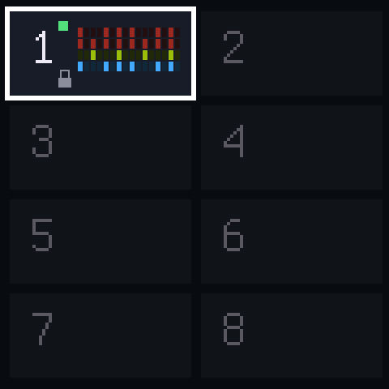
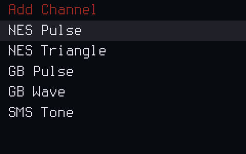
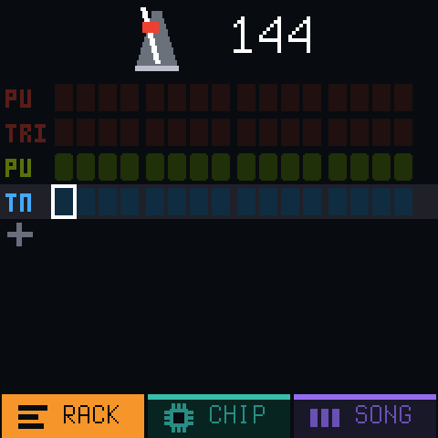
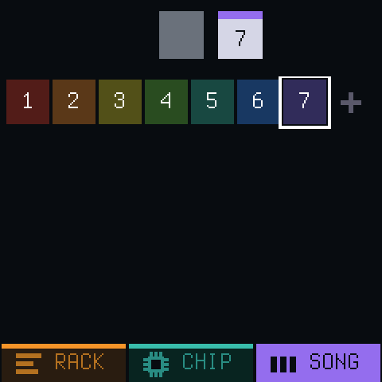
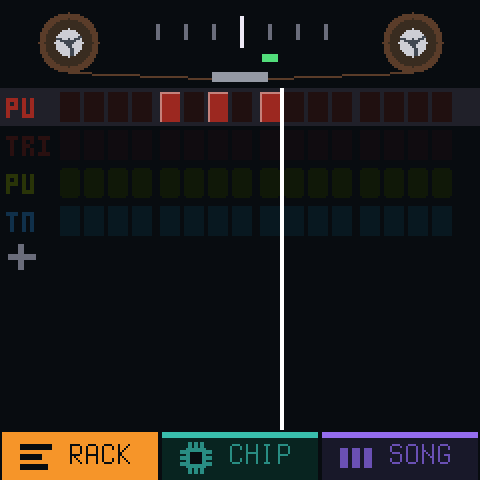
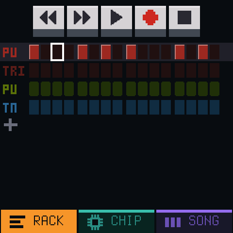
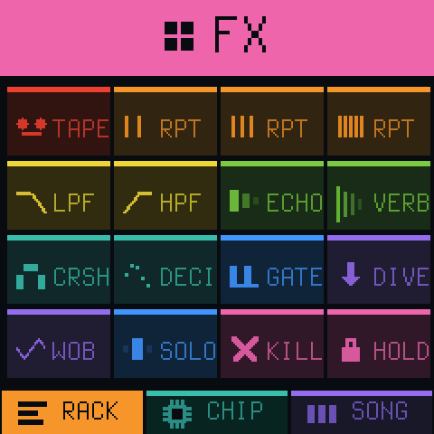

ChipboxTUTORIAL
Let's make the tetris theme! You know the one! (Korobeiniki for you nerds)
BASICSThe workflow
PROJECTScontain multiplePAGESPAGEScontain multipleCHANNELS- You build up the song by chaining
PAGEStogether
1Open a project
- Hold HOME to open the project view
- Pick a free project with the SELECT knob
- Press HOME to open it
DOUBLE Protip: If you mess the demo project up, you can always restore it by holding GLO and HOME to get to the SUPER HIDDEN MENU.

2Add channels
- Hit
HOMEuntil youre on RACK view - Twist that
PRESETSknob to the+row (the one at the bottom) - Press
OCT+to open the 'Add Channel' view - Add NES Pulse, NES Triangle, GB Pulse and SMS Tone, in that order

3Tempo
- Set
KNOB 1(Tempo) to 144

4Pages
- Hit
HOMEuntil you're in SONG view - Hit
OCT+until you have 7 pages

RACKEntering notes
- Set
KNOB 1(Tempo) to 144
5The lead
- Hit
HOMEuntil you're back on the RACK view - Twist that
PRESETSknob to the top (NES PU) channel - Double check you're on page 1. Turn the
ALGORITHMto flip the pages - Hit REC, then turn SELECT left once to slooooow it downnnnn
- Play bar 1 as the line passes each box
- Hit REC. Flip to the next page and do bar 2, and so on up to 7
- Wrong note? LFO is undo
One row is one bar, the 16 boxes on the screen. When you reach a note, press it. Keep it held until the next one. The keyboard starts on F and the lead lives on the right: E5 is the 14th white key from the left, G5 the last one.
1 2 3 4 5 6 7 8 9 10 11 12 13 14 15 16 bar 1 E5 · · · B4 · C5 · D5 · · · C5 · B4 · bar 2 A4 · · · A4 · C5 · E5 · · · D5 · C5 · bar 3 B4 · · · · · C5 · D5 · · · E5 · · · bar 4 C5 · · · A4 · · · A4 · · · · · · · bar 5 D5 · · · · · F5 · A5 · · · G5 · F5 · bar 6 E5 · · · · · C5 · E5 · · · D5 · C5 · bar 7 B4 · · · B4 · C5 · D5 · · · E5 · · ·
- Bar 8 is bar 4 again. We'll reuse it at the end
- A5 is off the end of the keyboard. Hit OCT+ for it, then OCT- after


6The bass
- PRESETS to the second channel
- OCT- twice
- REC, SELECT left once, and one note on every second box
bar 1 2 3 4 5 6 7 note E2 A2 E2 A2 D3 C3 E2
7The stabs
- PRESETS to the third channel
- Boxes 3, 7, 11 and 15 of every bar. Two notes, one then the other
- Bars 1, 3 and 7: B3, E4
- Bars 2 and 4: C4, E4
- Bar 5: D4, F4
- Bar 6: C4, E4
8Thicker
- PRESETS to the fourth channel
- OCT- once, play the lead again
- CHIP view, turn its VOL down
9The song
- HOME to the SONG view
- Slots 1 to 7 are in order already
- OCT+ for slot 8
- Turn PRESETS until it shows page 4. Same page, played again
- PLAY
+Mess with it
- FX, then hold the white keys
- ARP, then hold a chord
- SELECT while it plays
- Hold EDIT in the SONG view to copy a page, then change the copy
- GLO is help
